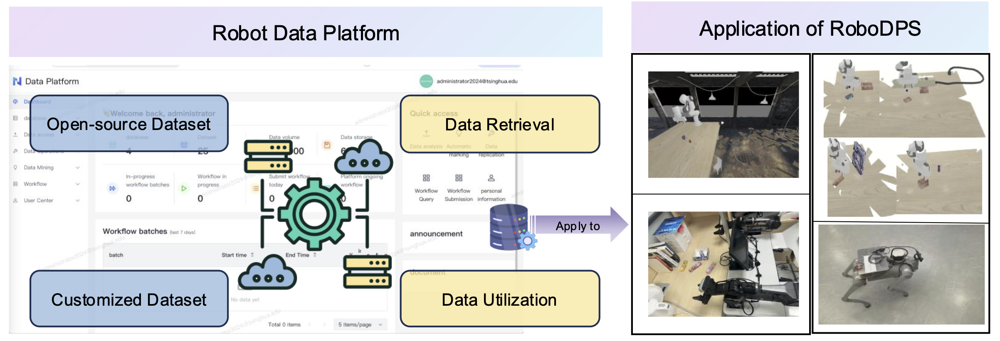

The deployment of robots in industrial and household applications has expanded significantly in recent years. However, the increasing complexity and diversity of tasks have led to challenges in managing the vast amounts of data generated by robots, including perception information, body state, and task execution status, etc. Effective utilization of this data is hindered by issues related to data management and adaptation. To address these challenges, in this paper, we propose a unified robot data management platform that effectively stores, retrieves, and visualizes data while reducing adaptation costs. The platform is designed to support flexible and customizable data structures, and facilitate the extraction of task-relevant information. Furthermore, to tackle the inconsistent success rates of manipulation tasks caused by factors such as task complexity, environmental uncertainties, and manipulation accuracy, we construct a "data platform - policy generation - task scheduling" pipeline to demonstrate the platform's application in robot manipulation, and our dynamic task scheduling mechanism can achieve a time saving of approximately 25% to enhance system efficiency. The corresponding project page is available at https://techpage.github.io/robodps/.
To manage data from various sources and formats, it is essential to parse and unify the collected data, which also helps to reduce the adaptation complexity for downstream tasks. In this section, we first introduce RooboDPS and then provide a usage example with grasping tasks.
üí´ To address the challenges of managing multi-source heterogeneous data, we introduce a unified robot data platform with support for flexible and customizable data. This enables efficient storage and parsing of embodied robot data while mitigating the complexity caused by non-uniform data structures.
üí´ The platform supports multiple retrieval ways and provides an intuitive visualization interface, allowing users to effectively extract relevant data through query statements, thereby enhancing task performance.
üí´ Taking the task success rate into consideration, we introduce a dynamic task scheduling framework that incorporates fault-tolerant re-planning, which achieves a time saving of approximately 25%. Furthermore, by constructing a robot "data platform - policy generation - task scheduling" pipeline, we demonstrate the application of the data platform in task manipulation.
When trained solely on maninboard 1, the model can generalize to unseen mainboard 2 and 3, with success rates of 0.45 and 0.35, respectively, after 300 epochs. However, the model fails to manipulate the wooden board, as its appearance closely resembles that of the box placed nearby. This similarity in visual features between the manipulated object and the placed object has misinterpret the scene, and thus being unable to perform the task accurately. By incorporating additional training data from the mainboard 3, the model achieves a success rate of 45% on wooden board, demonstrating that mixed training data can improve generalization across different objects.
To evaluate the effect of visual similarity between the grasped and target objects, we conduct an ablation experiment with the second task, where both objects have similar visual textures and colors. When using lid 1 for training, the results indicate that the success rates remained low across all lids, even with increased training epochs. Furthermore, even when the data from mainboard 3 is included in the training process, the semantic confusion caused by these wooden objects still prevents the model from executing the corresponding grasping actions.
For the peg insertion task, training on peg 1 with 80 episodes results in a success rate of 0.8 at epoch 300, with generalization to other pegs and success rates ranging from 0.7-0.85.
For tube insertion task, the model trained with tube 1 yields a success rate of 0.6 at epoch 300, generalization to unseen tube 2-4 achieves success rate of 0.5-0.65. In addition, the model can also be trained with mixed data.
The data retrieved from the RoboDPS can be used for further training. In this section, to illustrate the utilization of RoboDPS, we provide an application example in a real-world environment.